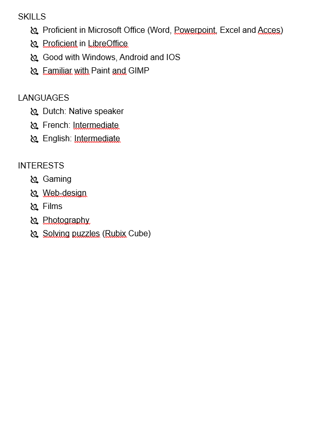
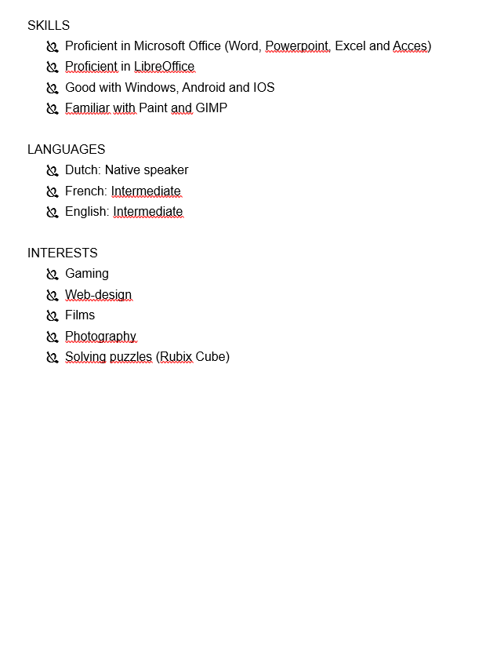

Welk bedrijf?

Stageverslag:
Dinsdag 13 maart 2018
De heenreis:
Vandaag was onze eerste stage dag. We waren op tijd vertrokken en alles ging volgens plan. Tot we plots op de verkeerde trein gestapt waren. We hadden de trein naar East Croydon genomen. Vanuit daar zijn we naar London Bridge gegaan waar we uiteindelijk de juiste trein konden nemen richting Westcombe Park.
Voormiddag:
Toen we aankwamen bij de stageplek kwamen we binnen in een zeer klein winkeltje. De baas van het winkeltje vond het niet erg dat we laat waren hij begreept het. We stelden ons zelf kort voor. Hij vroeg ons even te gaan zitten en te wachten. Dit liep uit tot bijna een uur zitten en wachten. Wanneer hij eindelijk uit zijn kantoortje kwam gaf hij ons een korte rondleiding en toonde hij ons wat we gingen doen. We zouden dus computers uit elkaar halen en de onderdelen ervan verkopen op Ebay. Dit vond ik zeer raar en dit was ook zeker niet wat ik verwachtte van de stage. Na de rondleiding mochten we ons stageverslag schrijven want de baas verwachtte nog iemand. Meneer Olugbola sprak ook niet zo goed Engels wat ik zeer vervelend vond omdat ik sommige woorden gewoon niet begreep. Na een halfuurtje had ik alles gedaan wat ik kon doen. Daarna hebben we geen taak meer gekregen en mochten we vrij op de computers.
Middagpauze:
Van 13 uur to 14 uur kregen we middagpauze. Jasper en ik zijn naar de McDonald’s geweest omdat dit niet zo ver was. Andere zaken waar we konden eten waren KFC en Domino’s Pizza.
Middag:
We hebben net lekker gegeten. We zijn net terug binnen en Olaseni laat ons weer wachten. Dit zal ik zeker aangeven donderdag op het gesprek in ADC. Na weer bijna een uur wachten gaf Ola ons een opdracht we moesten alle laptops vanuit de kelder naar boven brengen. Die moesten we schoonmaken; fotograferen; de foto’s overzetten naar de pc en dan in een mapje plaatsen. Dit heeft 3 uur geduurd daarna heeft Ola ons kort uitgelegd wat we de dag erna moesten doen.
De terugreis:
Toen we naar ons gastgezin gingen moesten we met de bus; we hadden eerst de verkeerde bus genomen maar dat hadden we al snel door dus we liepen terug naar de juiste halte. Toen we eenmaal de juiste bus hadden genomen verliep alles zeer vlot.
Dit was het verslag van dinsdag 13 maart.
Stageverslag:
Woensdag 14 maart 2018:
De heenreis:
Onze heenreis verliep deze keer vlotter dan de eerste dag. Toch hadden we een paar problemen de regeling via Google Maps klopte niet volledig dus moesten we ons aanpassen. Door dat de regeling anders was dan verwacht waren we 10 minuten te laat. Donderdag zullen we dus vroeger moeten vertrekken.
Voormiddag:
In de voormiddag moesten we de sleutel bij de buren halen want Ola was nog op een meeting dus dan zijn we aan ons verslag begonnen. Daarna hebben we de andere laptops proper gemaakt; gefotografeerd en op de computer gezet. Toen kwam er een klant binnen die iets wou uitprinten; de vrouw was niet zo goed met computers en ze had Parkinson dus typen ging ook niet goed dus moest ik haar helpen. Ze wou een mail afprinten van 3 pagina’s dus dat kostte 0.30 pence. Toen kwamen er opeens 3 mensen binnen 2 hebben we snel kunnen helpen. Een man had wat meer hulp nodig. Omdat hij vond dat we hem zo goed hebben geholpen had hij ons ongeveer 4 pond drinkgeld gegeven.
Middagpauze:
Tijdens de middagpauze zijn we met de bus naar de Subway gegaan dat duurde maar 12 minuten. Daar heb ik een lekker broodje genaamd Chicken Tikka gegeten. Om 10 voor 2 hebben we dan de bus terug genomen en konden we weer aan het werk.
Namiddag:
Ola was nog steeds niet terug dus begonnen we aan een taakje die we hadden gekregen. Dat was namelijk alle laptops die we schoongemaakt hadden moesten we testen maar het probleem was dat ze allemaal plat waren en we de juiste lader moesten zoeken; daar hadden we geen zin in dus hebben we verder aan onze verslagen en aan de activiteitenlijst gewerkt. Toen de baas eindelijk terug kwam zei hij ons dat we een halfuurtje vroeger mochten stoppen. Daar waren we hel blij mee.
Terugreis:
De terugreis was hetzelfde als dinsdag en verliep weer vlot . De bus naar de Jubilee Line; De jubilee Line tot West Hampstead en dan de Thameslink naar Mill Hill Broadway en 5 minuten stappen naar ons gasthuis.
Stageverslag:
Woensdag 14 maart 2018:
De heenreis:
Onze heenreis verliep deze keer vlotter dan de eerste dag. Toch hadden we een paar problemen de regeling via Google Maps klopte niet volledig dus moesten we ons aanpassen. Door dat de regeling anders was dan verwacht waren we 10 minuten te laat. Donderdag zullen we dus vroeger moeten vertrekken.
Voormiddag:
In de voormiddag moesten we de sleutel bij de buren halen want Ola was nog op een meeting dus dan zijn we aan ons verslag begonnen. Daarna hebben we de andere laptops proper gemaakt; gefotografeerd en op de computer gezet. Toen kwam er een klant binnen die iets wou uitprinten; de vrouw was niet zo goed met computers en ze had Parkinson dus typen ging ook niet goed dus moest ik haar helpen. Ze wou een mail afprinten van 3 pagina’s dus dat kostte 0.30 pence. Toen kwamen er opeens 3 mensen binnen 2 hebben we snel kunnen helpen. Een man had wat meer hulp nodig. Omdat hij vond dat we hem zo goed hebben geholpen had hij ons ongeveer 4 pond drinkgeld gegeven.
Middagpauze:
Tijdens de middagpauze zijn we met de bus naar de Subway gegaan dat duurde maar 12 minuten. Daar heb ik een lekker broodje genaamd Chicken Tikka gegeten. Om 10 voor 2 hebben we dan de bus terug genomen en konden we weer aan het werk.
Namiddag:
Ola was nog steeds niet terug dus begonnen we aan een taakje die we hadden gekregen. Dat was namelijk alle laptops die we schoongemaakt hadden moesten we testen maar het probleem was dat ze allemaal plat waren en we de juiste lader moesten zoeken; daar hadden we geen zin in dus hebben we verder aan onze verslagen en aan de activiteitenlijst gewerkt. Toen de baas eindelijk terug kwam zei hij ons dat we een halfuurtje vroeger mochten stoppen. Daar waren we hel blij mee.
Terugreis:
De terugreis was hetzelfde als dinsdag en verliep weer vlot . De bus naar de Jubilee Line; De jubilee Line tot West Hampstead en dan de Thameslink naar Mill Hill Broadway en 5 minuten stappen naar ons gasthuis.
Stageverslag:
Vrijdag 16 maart 2018:
De heenreis:
We hebben dezelfde route genomen als donderdag maar gewoon een trein later zodat we met Dylan meekonden. Ik denk dat we vanaf nu iedere dag deze route zullen nemen maar misschien nog een trein later want we waren vandaag nog een kwartier te vroeg.
De voormiddag:
In de voormiddag moesten we een laptop formatteren en Windows 7 HomePremium er op zetten. Dit ging niet zonder problemen dus moesten we aan Olaseni vragen om te helpen.
Middagpauze:
In de middag zijn Jasper en ik naar de Mcdonalds gestapt en hebben we een BigMac menu gegeten. Ik had na deze maaltijd nog honger dus heb ik nog 2 euro deals gekocht.
De namiddag:
In de namiddag hebben we nog een uurtje verder gewerkt aan de laptop. Dan moest Ola weg en hebben we aan ons verslag gewerkt. Als hij terug kwam hebben we hem om een andere taak gevraagd.
De terugreis:
De terugreis was weer het zelfde als altijd en verliep zeer vlot.
Stageverslag:
Maandag 20 maart 2018:
De heenreis:
Toen we van de Thameslink naar de metro liepen hadden Jasper en ik al gezien dat het heel druk was. We dachten dat het slim was om een metro later te nemen maar er waren nog steeds evenveel mensen als voorheen. Omdat we een metro later genomen hadden waren we 5 minuutjes te laat.
De voormiddag:
In de voormiddag kregen we al direct een taak. Die taak luidde dat we een laptop moesten openmaken en er alle onderdelen moesten uithalen. Daarna moesten we alle onderdelen vervangen en later moesten we ze er weer insteken.
Middagpauze:
Deze keer wouden we eens wat anders eten. Uit alle fastfoodrestaurants die er waren hadden we nog niet in de KFC gegeten. Het was Jasper’s eerste keer dat hij daar at. Toen we klaar waren met eten zijn we nog in een paar supermarktjes langsgegaan om wat snacks voor die avond mee te nemen.
De namiddag:
In de namiddag hebben we een paar klanten geholpen en verder aan de laptop gewerkt daarna hebben we opgeruimd en mochten we 40 minuten vroeger naar huis.
De terugreis:
De terugreis was hetzelfde als de andere keren.
Stageverslag:
Dinsdag 20 maart:
De heenreis:
De heenreis verliep zeer vlot en er was niet veel volk op de metro waardoor we zitplaats hadden. We waren te vroeg in Greenwich dus we gingen naar het tankstation om geld af te halen.
De voormiddag:
In de voormiddag hebben we samen met Ola de onderdelen van de laptop getest.
Middagpauze:
In de namiddag zijn we naar het centrum van Greenwich gegaan om daar in de Subway een broodje te eten. Jasper en ik hebben allebei een Chicken Tikka gegeten.
De namiddag:
In de namiddag hebben we de rest van de laptops naar beneden gebracht en toen we klaar waren mochten we aan onze stage verslagen en de activiteitenlijst werken.
De terugreis:
Dit verliep weer zeer vlot. Toen we aankwamen in Mill Hill liepen we Tjorven tegen het lijf we zijn dan met hem naar huis gestapt.
Stageverslag:
Woensdag 21 maart 2018:
De heenreis:
Deze keer verliep de heenreis iets minder vlot omdat er op de Jubilee Line veel file was daarom kwamen we een kwartier later aan dan gepland maar we waren nog steeds op tijd.
De voormiddag:
Ola was er niet maar we hadden wel een paar opdrachten gekregen. We moesten de computers testen en de specs ervan in een documentje zetten. Ook moesten we foto’s van een paar monitors nemen en van 1 printer.
De middagpauze:
Tijdens de middagpauze gingen we naar de McDonald’s. Toen we daar aankwamen en ons eten hadden gekregen kreeg ik opeens een telefoontje van meneer Lippens. Omdat onze baas niet op ons werk was had hij mij gebeld en gevraagd of ze naar ons konden komen om even te praten over de stage en het gastgezin. Toen we uitgepraat waren moesten we nog op de foto met de andere leerkrachten.
De namiddag:
In de namiddag hebben we een uur moeten wachten op Ola voor hij ons een opdracht gaf. Gelukkig kwamen er toen een paar klanten die we moesten helpen. En als laatste moesten we nog een paar laptop’s fotograferen en schoonmaken.
De terugreis:
De terugreis verliep vlot en het was minder druk dan anders op de metro.
Stageverslag:
Donderdag 22 maart 2018:
De heenreis:
De heenreis verliep ook redelijk vlot. Want we waren weer veel te vroeg. Dus hebben we nog wat snacks voor de dag gekocht.
De voormiddag:
Ola was er niet maar dat wisten we niet dus hebben we eerst een halfuur buiten gewacht (gelukkig scheen de zon) en dan zijn we bij de buren gaan vragen waar Ola was die was blijkbaar gaan shoppen en toen gaf de man ons de sleutel. In de voormiddag hebben we ook onze taakjes afgewerkt. Dat was weer het zelfde zoals altijd. Schoonmaken, foto’s nemen en op de pc zetten.
De middagpauze:
In de middag hebben we nog eens in de Subway van North Greenwich Station gegeten. Omdat we nog tijd over hadden zijn we de O2 Dome gaan bekijken. Ik vond het persoonlijk leuk om eens gezien te hebben.
De namiddag:
In de namiddag was Ola er nog steeds niet dus hebben we de verslagen afgewerkt.
De terugreis:
De terugreis verliep alweer redelijk vlot zonder veel te moeten wachten.
 
